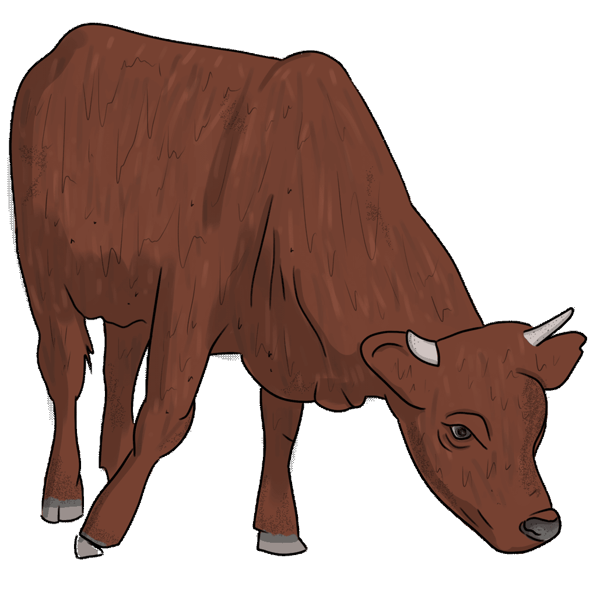

Welcome to the Bronze Age in the North of Scotland!

The cartoon, virtual reality (WebVR) experience that you’ve just come from (or are hopefully heading towards) depicts archaeological information discovered from the contents of a 4,250 year old burial of a young woman, found in Achavanich – a tiny village in Caithness – over 30 years ago. The recent rediscovery of this site by researchers from the Achavanich Beaker Burial project has led to new revelations about the Early Bronze Age in this part of the world.
Along with the skeleton of the young woman buried at Achavanich, archaeologists uncovered a beaker – a typical style of pottery vessel from this period – as well as the shoulder bone of a small cow, and three small pieces of flint. One aspect of the new research examined residue found on the surface of the beaker: preserved inside this residue were tiny grains of pollen which are invisible to the naked eye. Specialists used the pollen to identify the types of plants growing in this area at this time. A number of different species of trees including pine, birch, alder and hazel were identified. This is interesting to archaeologists because today trees are rarely found growing naturally in Caithness, and it is believed they haven’t grown in this part of the world for millennia.
Also buried with Ava was a shoulder bone from a small cow; it may have been a young adult, or possibly a small variety. Unfortunately, although we know they were there, we don’t know much about what they would have looked like. It is highly likely they would have looked very different from the type of cow we have depicted in the game. All we can say for sure is that cattle were being used by people at this time.

You can find out more information about all of the other new research undertaken during this project here.

The complete roundhouse is an interpretation of a real excavation of a Bronze Age hut circle at Skaill in Caithness. The excavation was carried out by AOC Archaeology on behalf of Castletown Heritage Society as part of a project called ‘A Window on the Hidden Bronze Age Landscape of Caithness’. The earliest dates from this site – from material in the outer bank – date to around the same time that Ava was alive. You can find out more information about this project and even read the archaeological excavation report here.

This experience has been made by Samsung Internet advocate Diego González Zúñiga who has turned an idea into a reality; engagement and outreach has been organised by Hannah McGlynn and research, illustration and design was organised and crafted by Maya Hoole of the Achavanich Beaker Burial project.